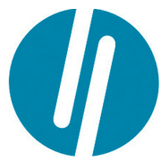

Sobre Mi
Soy estudiante universitaria y me he desempeñado como traductora amateur de textos del inglés al español. Actualmente estoy cursando el programa #YoProgramo y el curso de Back End de Oracle Next Education . Además, estudio Ingeniería Industrial y Tecnicatura Superior en Informática en la Universidad Nacional de General Sarmiento. Soy una Developer Full Stack Jr.
-
Estudios
-
Secundaria

Estudios secundarios cursados en el Colegio San Agustín entre 2012 y 2017.
-
Universidad
Estudios actuales en la Universidad Nacional de General Sarmiento iniciados en 2017. Ingenieria Industrial y Tecnicatura en Informatica.
-
Idiomas
-

Español

Ingles
-
Skills